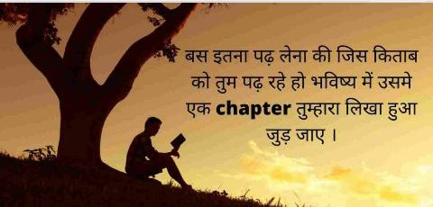
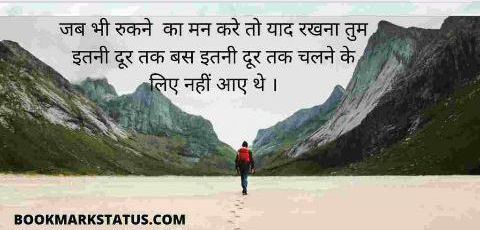
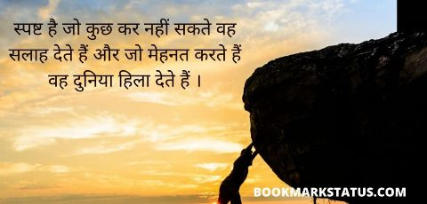

GK (General knowledge) Question and Answer in Hindi
विभिन्न विषयों के बारे में तथ्यों की एक विस्तृत श्रृंखला का ज्ञान ही सामान्य ज्ञान कहलाती है। सामान्य ज्ञान वह सूचना है जो विभिन्न माध्यमों से समय के साथ जमा होती रही है। यह विशिष्ट शिक्षण को शामिल करता है जो केवल व्यापक प्रशिक्षण और एक ही माध्यम तक सीमित जानकारी के साथ प्राप्त किया जा सकता है। सामान्य ज्ञान आज सभी तरह के प्रतियोगिता परीक्षाओं अनिवार्य है। सामान्य ज्ञान (General knowledge) के बहुत सारे महत्वपूर्ण Questions यहां पे Listed है। अपने समान्य ज्ञान को बढ़ाने के लिए एक बार जरूर पढ़े।
➡THIS QUESTION AND ANSWER WRITE IN YOUR WRITEING BOOK...
[{( GK Questions )}]
1. पृथ्वी पर दिन और रात होते हैं ?
दैनिक गति के कारण
वार्षिक गति के कारण
छमाही गति के कारण
तिमाही गति के कारण
SHOW ANSWER
2. सबसे बड़ा ग्रह है ?
बृहस्पति
पृथ्वी
युरेनस
शुक्र
SHOW ANSWER
3. अगुलहास धारा किस महासागर में बनती है ?
प्रशान्त महासागर में
हिन्द महासागर में
आर्कटिक महासागर में
अन्य
SHOW ANSWER
4. पृथ्वी का सबसे भीतर वाला भाग क्रोड किसका बना होता है ?
ताँबा और जस्ता
निकेल और ताँबा
लोहा और जस्ता
लोहा और निकेल
SHOW ANSWER
5. मैंगनीज के उत्पादन में भारत का दूसरा स्थान है, प्रथम देश कौन सा है ?
फ्रांस
रुसी संघ
कनाडा
संयुक्त राज्य अमेरिका
SHOW ANSWER
6. निम्नांकित में से कौन देश कोयले का सबसे बड़ा उत्पादक है ?
ब्राजील
भारत
अमेरिका
चीन
SHOW ANSWER
7. इनमें किसको जापान का मैनचेस्टर कहा जाता है ?
ओसाका
टोकियो
नागासाकी
याकोहामा
SHOW ANSWER
8. भारत के स्वतंत्रता संघर्ष के दौरान 'Deccan Educational Society' नामक संस्था की स्थापना किसने की थी ?
जवाहरलाल नेहरू
रवीन्द्र नाथ टैगोर
बाल गंगाधर तिलक
व्योमेश चन्द्र बनर्जी
SHOW ANSWER
9. सबसे छोटा ग्रह है ?
मंगल
शनि
बुध
नेप्चून
SHOW ANSWER
10. 1857 के गदर के समय भारत का गवर्नर जनरल कौन था ?
लॉर्ड केनिंग
नील आर्मस्ट्रांग
जॉन मथाई
अन्य
SHOW ANSWER
11. 'भारत भारतीयों के लिए ' नारा किस संस्था ने दिया था ?
अशासकीय संस्था
आर्य समाज ने
ब्राह्म समाज ने
अन्य
SHOW ANSWER
12. विन्ध्याचल और सतपुड़ा पहाड़ियों के बीच से होकर बहने वाली नदी है ?
नर्मदा
सिंधु नदी
कोसी
गोदावरी
SHOW ANSWER
13. इन्वेस्टर प्रोटेक्शन फण्ड (Investor Protection Fund) किस संस्था ने स्थापित किया है ?
पूंजी मुद्दे ने
DLF ने
सेबी (SEBI) ने
अन्य
SHOW ANSWER
14. कुण्डापुर एंव करवार कच्छ वनस्पति स्थान कहाँ स्थित हैं ?
केरल राज्य में
कर्नाटक राज्य में
तमिल नाडु राज्य में
त्रिपुरा राज्य मे
SHOW ANSWER
15. भारत की प्रथम बहुउद्देशीय परियोजना किस नदी पर बनाई गई थी ?
कावेरी नदी
गंडक नदी
दामोदर नदी पर
यमुना नदी
SHOW ANSWER
16. भारत में प्रथम स्थापित परमाणु-संयंत्र (Atomic Plant) कौन-सा है ?
तारापुर परमाणु संयंत्र
कैटेनोम परमाणु संयंत्र
कुडनकुलम परमाणु संयंत्र
अन्य
SHOW ANSWER
17. यूनाइटेड किंगडम (United Kingdom- U.K) में शामिल हैं
इंगलैण्ड तथा उतरी आयरलैण्ड
उतरी आयरलैण्ड तथा वेल्स
स्कॉटलैण्ड तथा वेल्स
A और C
SHOW ANSWER
18. आगरा शहर को किसने बसाया ?
सिकन्द लोदी
अकबर
बहलोल लोदी
शाहजहाँ
SHOW ANSWER
19. राष्ट्रिय प्रतीक के निचले भाग में उत्क्रीर्णित शब्द 'सत्यमेव जयते' किस सन्दर्भ से लिए गए हैं ?
पुराण
जातक
मुदकोपनिषद्
महाभारत
SHOW ANSWER
20. अशोक के शिलालेखों की लिपि क्या है ?
गुरुमुखी
ब्राह्यी
देवनागरी
हयरोग्लाइफिक्स
SHOW ANSWER
21. बिहू निम्नलिखित में से किसका लोकप्रिय उत्सव है ?
असम
उड़ीसा
बिहार
बंगाल
SHOW ANSWER
22. विवेकानन्द रॉक मेमोरियल कहाँ स्थित है ?
अण्डमान निकोबार
लक्षद्वीप
केरल
तमिलनाडु
SHOW ANSWER
23. महात्मा गांधी को राष्ट्रपिता के रूप में उल्लेख सबसे पहले किसने किया था ?
सुभाषचन्द्र बोस
जवाहरलाल नेहरू
बल्ल्भभाई पटेल
इनमें से कोई नहीं
SHOW ANSWER
24. प्रथम गोलमेज सम्मेलन कहाँ हुआ था ?
नई दिल्ली में
लन्दन में
बम्बई में
इनमें से कोई नहीं
SHOW ANSWER
25. देश का लोह पुरुष किसे कहा जाता है ?
सरदार पटेल
पं. जवाहरलाल नेहरू
महात्मा गांधी
लोकमान्य तिलक
SHOW ANSWER
26. महात्मा गांधीजी को 'अधनंगा फकीर' किसने कहा ?
हिटलर
जिन्ना
चर्चिल
माउण्टबेटन
SHOW ANSWER
27. महात्मा गांधी निम्नलिखित में से किनसे अधिक प्रभावित थे ?
बर्नार्ड शा
लिओ टॉलस्टॉय
कार्ल मार्क्स
इनमें से कोई नहीं
SHOW ANSWER
28. महात्मा गांधी का जन्म हुआ था ?
1859
1869
1879
1889
SHOW ANSWER
29. पंजाब केसरी के नाम से विख्यात थे ?
रजनीत सिंह
गुरु गोविन्द सिंह
गुरु नानक
लाला राजपत राय
SHOW ANSWER
30. निम्नलिखित में से कौन सी गंगा की सहायक नदी नहीं है ?
सुवर्ण रेखा
सोन
गण्डक
कोसी
SHOW ANSWER
31. किस राज्य की सीमा चीन से जुड़ी हुई है ?
मणिपुर
नगालैण्ड
असम
अरुणाचल प्रदेश
SHOW ANSWER
32. कितने वर्ष के पश्चात राष्ट्रीय जनगणना होती है ?
दस
पाँच
तीन
पच्चीस
SHOW ANSWER
33. काजीरंगा राष्ट्रीय पार्क है ?
उड़ीसा में
महाराष्ट्र में
असम में
इनमें से कोई नहीं
SHOW ANSWER
34. ऑपरेशन फ्लड से सम्बन्धित है ?
तमिलनाडु
बाढ़ नियन्त्रण
दूध का आयात
डेयरी विकास
SHOW ANSWER
35. धान की खेती के लिए उत्तम मिट्टी कौन सी है ?
सख्त मिट्टी
काली मिट्टी
दोमट मिट्टी
लाल मिट्टी
SHOW ANSWER
36. कौन से भारतीय शहर हेवी इलेक्ट्रिकल्स से सम्बन्दित है ?
नागपुर
रायपुर
भोपाल
लखनऊ
SHOW ANSWER
37. भारत में हरित क्रान्ति का श्रेय जिस सुविख्यात कृषि औद्योगिकीविज्ञ को जाता है, उसका नाम है ?
आर. वेंकटमन
सीताकान्त महापात्र
डॉ. वर्गीस कुरियन
जयन्त नार्लिकर
SHOW ANSWER
38. राणा प्रताप सागर सम्बन्धित है ?
सौर ऊर्जा से
सिंचाई से
नाभिकीय ऊर्जा से
जल विद्युत से
SHOW ANSWER
39. पृथ्वी और सूर्य के बीच अधिकतम दूरी किस तिथि को होती है ?
22 जुलाई
30 जनवरी
4 जुलाई
21 सितम्बर
SHOW ANSWER
40. भारत के राजचिन्ह में प्रयुक्त होनेवाले शब्द ' सत्यमेव जयते ' किस उपनिषद् से लिए गए हैं ?
ईश उपनिषद्
मुण्डक उपनिषद्
कठ उपनिषद्
इनमें से कोई नहीं
SHOW ANSWER
41. गायत्री मंत्र किस पुस्तक से लिया गया है ?
ऋग्वेद
सामवेद
यजुर्वेद
अथर्ववेद
SHOW ANSWER
42. हिन्दी किस लिपि में लिखी जाती है ?
पर्शियन
रोमन
देवनागरी
पाली
SHOW ANSWER
43. ब्राह्यी लिपि को किसने स्पष्ट किया ?
जेम्स प्रिन्सेप
जॉन मार्शल
जॉन एक फ्लीट
इनमें से कोई नहीं
SHOW ANSWER
44. राष्ट्रीय विज्ञान दिवस किस दिन मनाया जाता है ?
21 जनवरी
21 मार्च
28 फरवरी
23 मार्च
SHOW ANSWER
45. 'राष्ट्रीय खेल दिवस' किस दिन मनाया जाता है ?
29 मार्च
29 अगस्त
20 सितम्बर
2 दिसम्बर
SHOW ANSWER
46. 'कम्प्यूटर साक्षरता दिवस' किस दिन मनाया जाता है ?
12 अगस्त
13 सितम्बर
2 दिसम्बर
इनमें से कोई नहीं
SHOW ANSWER
47. 'केन्द्रीय उत्पाद शुल्क दिवस' किस दिन मनाया जाता है ?
14 फरवरी
24 फरवरी
18 फरवरी
21 फरवरी
SHOW ANSWER
48. 'हिन्दी दिवस' किस दिन मनाया जाता है ?
26 अगस्त
15 फरवरी
14 सितम्बर
18 दिसम्बर
SHOW ANSWER
49. 'शिक्षक दिवस' किस दिन मनाया जाता है ?
16 मार्च
9 अगस्त
5 सितम्बर
इनमें से कोई नहीं
SHOW ANSWER
50. 'किसान दिवस' किस दिन मनाया जाता है ?
23 दिसम्बर
28 फरवरी
14 मार्च
5 अगस्त
SHOW ANSWER
51. 'चिकित्सक दिवस' किस दिन मनाया जाता है ?
1 अप्रैल
1 मई
1 जुलाई
1 जून
SHOW ANSWER
52. 'नौसेना दिवस' किस दिन मनाया जाता है ?
7 अगस्त
16 सितम्बर
4 दिसम्बर
8 फरवरी
SHOW ANSWER
53. 'राष्ट्रीय एकता दिवस' किस दिन मनाया जाता है ?
2 जून
14 जुलाई
2 अक्टूबर
19 नवम्बर
SHOW ANSWER
'राष्ट्रीय प्रौद्योगिकी दिवस' किस दिन मनाया जाता है ?
11 मई
11 फरवरी
11 अप्रैल
11 जुलाई
SHOW ANSWER
55. 'सेना दिवस' किस दिन मनाया जाता है ?
4 सितम्बर
7 दिसम्बर
26 फरवरी
15 जनवरी
SHOW ANSWER
56. 'राष्ट्रीय विधि दिवस' किस दिन मनाया जाता है ?
26 अक्टूबर
26 नवम्बर
26 दिसम्बर
इनमें से कोई नहीं
SHOW ANSWER
57. 'मलेरिया दिवस' किस दिन मनाया जाता है ?
14 फरवरी
21 मार्च
25 अगस्त
17 सितम्बर
SHOW ANSWER
58. 'शहीद दिवस' किस दिन मनाया जाता है ?
30 जनवरी
13 फरवरी
15 मार्च
22 अगस्त
SHOW ANSWER
59. 'संचयिका दिवस' किस दिन मनाया जाता है ?
11 अगस्त
15 सितम्बर
12 दिसम्बर
8 फरवरी
SHOW ANSWER
60. 'सामाजिक अधिकारिता स्मृति दिवस' किस दिन मनाया जाता है ?
29 जनवरी
18 फरवरी
21 अगस्त
20 मार्च
SHOW ANSWER
61. 'आतंकवाद विरोध दिवस' किस दिन मनाया जाता है ?
12 मई
24 मई
21 मई
28 मई
SHOW ANSWER
62. 'सशस्त्र सेना झंडा दिवस' किस दिन मनाया जाता है ?
7 सितम्बर
7 दिसम्बर
7 फरवरी
7 अप्रैल
SHOW ANSWER
63. 'पुलिस स्मृति दिवस' किस दिन मनाया जाता है ?
8 अक्टूबर
15 अक्टूबर
19 अक्टूबर
21 अक्टूबर
SHOW ANSWER
64. 31 मई किस रूप में मनाया जाता है ?
फादर्स डे
एण्टीटुबैको डे
टीचर्स डे
मदर्स डे
SHOW ANSWER
65. 21 जनवरी को निम्नलिखित में से किसका जन्म दिवस मनाया जाता है ?
सुभाषचन्द्र बोस
गुरु गोविन्द सिंह
रवीन्द्रनाथ टैगोर
चन्द्रशेखर आजाद
SHOW ANSWER
66. प्रतिवर्ष किसकी स्मृति में 13 फरवरी को महिला दिवस मनाया जाता है ?
इन्दिरा गाँधी की
लक्ष्मीबाई की
सरोजिनी नायडू की
कमल नेहरू की
SHOW ANSWER
67. 5 सितम्बर किस रूप में मनाया जाता है ?
श्रमिक दिवस
महिला दिवस
बाल दिवस
शिक्षक दिवस
SHOW ANSWER
68. राजीव गाँधी का जन्म दिवस 20 अगस्त किस रूप में मनाया जाता है ?
संकल्प दिवस
राष्ट्रीय एकता दिवस
आतंकवाद विरोध दिवस
आतंकवाद विरोध दिवस
SHOW ANSWER
69. 'बाल दिवस' कब मनाया जाता है ?
14 जुलाई
14 अक्टूबर
14 नवम्बर
इनमें से कोई नहीं
SHOW ANSWER
70. 'प्रवासी भारतीय दिवस' कब मनाया जाता है ?
9 जनवरी
1 फरवरी
12 मार्च
15 अगस्त
SHOW ANSWER
71. 'राष्ट्रीय युवा दिवस' कब मनाया जाता है ?
21 जनवरी
13 जनवरी
12 जनवरी
15 जनवरी
SHOW ANSWER
72. 'राष्ट्रीय पक्षी दिवस' कब मनाया जाता है ?
12 अक्टूबर
12 नवम्बर
18 दिसम्बर
इनमें से कोई नहीं
SHOW ANSWER
73. 'बाल दिवस' किस महापुरुष की जयंती के रूप में मनाया जाता है ?
महात्मा गाँधी
सुभाष चन्द्र बोस
लाल बहादुर शास्त्री
पंडित जवाहरलाल नेहरू
SHOW ANSWER
74. देश के प्रथम उपराष्ट्रपति सर्वपल्ली राधाकृष्णन का जन्म दिवस किस रूप में मनाया जाता है ?
शिक्षक दिवस
बाल दिवस
विधि दिवस
डॉक्टर दिवस
SHOW ANSWER
75. बीटिंग द रीट्रिट का सम्बन्ध किससे है ?
मजदूर दिवस
गणतंत्र दिवस
महिला दिवस
शहीद दिवस
SHOW ANSWER
76. निम्नलिखित में से किसका जन्म दिवस 'डॉक्टर्र दिवस' के रूप में मनाया जाता है ?
डॉ. विधानचंद राय
डॉ. जाकिर हुसैन
डॉ. एस. राधाकृष्णन
इनमें से कोई नहीं
SHOW ANSWER
77. किस महापुरुष की जयंती राष्ट्रीय युवा दिवस के रूप में मनाया जाता है ?
महात्मा गाँधी
सरदार भगत सिंह
चन्द्रशेखर आजाद
स्वामी विवेकानन्द
SHOW ANSWER
78. किस भारतीय हॉकी खिलाड़ी का जन्म दिवस 'राष्ट्रीय खेल दिवस' के रूप में मनाया जाता है ?
रूप सिंह
जयपाल
मेजर ध्यानचंद
इनमें से कोई नहीं
SHOW ANSWER
79. विश्व में डाकघरों का सबसे बड़ा जाल किस देश में पाया जाता है ?
चीन
सं. रा. अ.
भारत
इण्डोनेशिया
SHOW ANSWER
80. भारत में डाकघरों की संख्या लगभग है ?
1.2 लाख
1.5 लाख
1.7 लाख
1.9 लाख
SHOW ANSWER
81. ग्रीन चैनल है एक ?
डाक सेवा
आकाशवाणी चैनल
दूरदर्शन चैनल
टेलीफोन सेवा
SHOW ANSWER
82. भारत में डाक सूचकांक प्रणाली की शुरुआत किस वर्ष हुई ?
1952 ई.
1998 में
1972 में
1970 में
SHOW ANSWER
83. भारत को कितने डाक जोन में विभाजित किया गया है ?
2
6
8
10
SHOW ANSWER
84. प्रसिद्ध विरुपाक्ष मंदिर कहाँ अवस्थित है ?
भद्राचलम
चिदम्बरम
हम्पी
इनमें से कोई नहीं
SHOW ANSWER
85. हिन्द भारत की जनता के संदर्भ में "हिन्दू" शब्द का प्रथम बार प्रयोग किया था ?
अरबों ने
यूनानियों ने
रोमवासियों ने
चीनियों ने
SHOW ANSWER
86. मोहनजोदड़ों कहाँ स्थित है ?
सिंध
गुजरात
उत्तर प्रदेश
पंजाब
SHOW ANSWER
87. महात्मा गाँधी ने सत्याग्रह क्रियाविधि सबसे पहले कहाँ प्रस्तुत की ?
दाण्डी
अहमदाबाद
खेड़ा
चम्पारण
SHOW ANSWER
88. बैंकिंग के क्षेत्र में CBS में C का पूर्ण रूप क्या है ?
कोर
कॉन्टीनेंट
कम्पलीट
क्रेडिट
SHOW ANSWER
89. CAD का पूर्ण रूप क्या है ?
Cash All Daily
Computer All Design
Computer Aided Design
Call All Design
SHOW ANSWER
90. OMR का पूर्ण रूप क्या है ?
On Money Reader
Optical Mark Reader
On Mark Reader
इनमें से कोई नहीं
SHOW ANSWER
91. SEZ का पूर्ण रूप क्या है ?
Special Economic Zone
Small Economic Zone
Service Economic Zone
इनमें से कोई नहीं
SHOW ANSWER
92. WLL का अर्थ है ?
विदाउट लीवर लाइन
वायरलेस इन लोकल लूप
वायरलेस इन लूप लाइन
विदिन लोकल लाइन
SHOW ANSWER
93. 'जय हिन्द' का नारा किसने दिया ?
सुभाष चन्द्र बोस ने
महात्मा गाँधी ने
मोती लाल नेहरू ने
इनमें से कोई नहीं
SHOW ANSWER
94. किसने कहा था, 'तुम मुझे खून दो, मैं तुम्हें आजादी दूंगा' ?
भगत सिंह
चन्द्रशेखर आजाद
अरविंद घोष
सुभाष चन्द्र बोस
SHOW ANSWER
95. देशबंधु की उपाधि संबंधित है ?
बी. आर. अम्बेडकर
बिपिन चन्द्र पाल
रवीन्द्रनाथ टैगोर
चित्तरंजन दास
SHOW ANSWER
96. सुभाष चन्द्र बोस ने सिंगापुर में दिल्ली चलो का नारा दिया ?
1942 में
1943 में
1944 में
1945 में
SHOW ANSWER
97. गाँधी-इरविन समझौता किससे संबंधित है ?
सविनय अवज्ञा आंदोलन
असहयोग-खिलाफत आंदोलन
रॉलेट आंदोलन
भारत छोड़ो आंदोलन
SHOW ANSWER
98. महात्मा गाँधी को सर्वप्रथम राष्ट्रपिता किसने कहा ?
वल्लभ भाई पटेल
जे. एल. नेहरू
सुभाष चन्द्र बोस
चन्द्रशेखर आजाद
SHOW ANSWER
99. कायदे आजाद किसे कहा जाता है ?
मोहम्मद अली जिन्ना
जवाहरलाल नेहरू
भगत सिंह
महात्मा गाँधी
SHOW ANSWER
100. चौरी-चौरा नाम प्रसिद्ध स्थल कहाँ है ?
गोरखपुर
आगरा
इलाहबाद
लखनऊ
SHOW ANSWER
  